Roundraw - простой редактор изображений.
Вы можете использовать его для создания простых рисунков, редактирования существующих изображений.
Чтобы создать рисунок вы можете:
1. Выбрать фигуру и нарисовать ее.
2. Выбрать заливку, изменить ширину линии и тени.
3. Вставить изображение и изменить его размеры.
4. Выделить, удалить, изменить или переместить фигуру;
Редактор имеет некоторые особенности:
Все настройки редактора сохраняются автоматически;
Все панели можно скрыть;
Весь рисунок в roundraw имеет векторный формат;
Любую фигуру можно удалить или изменить.
Чтобы увеличить рабочее пространство, вы можете использовать кнопки, представленные в следующей таблице:
| Иконка |
Скрывает или показывает.. |
|
Панель сверху. |
|
Панель справа. |
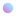 |
Вкладу с настройками цвета. |
|
Вкладу с настройками обводки. |
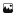 |
Вкладу с настройками вставляемого изображения. |
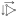 |
Вкладу с настройками координат фигуры. |
Все основные функции редактора находятся в верхней панели. В следующей таблице представлены все основные функции и кнопки.
| Название |
Иконка |
Клавиши |
Назначение |
| Курсор |
|
1 |
Выделяет фигуры. Перечеркните фигуру, чтобы выделить. |
| Ластик |
 |
2 |
Удаляет фигуру. Перечеркните фигуру, чтобы удалить. |
Пипетка |
 |
3 |
Определяет цвет места, на которое вы нажали. |
| Карандаш |
|
4 |
Рисует кривые линии. |
| Прямая |
|
5 |
Рисует прямые линии. Чтобы добавить сегмент, нажмите на пробел или ПКМ. |
| Круг |
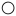 |
6 |
Рисует ровный круг. |
| Многоугольник |
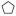 |
7 |
Рисует многоугольник. Чтобы добавить угол, нажмите на пробел или ПКМ. |
| Прямоугольник |
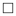 |
8 |
Рисует прямоугольник. |
Сохранить |
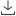 |
(нет) |
Загружает изображение на ваш компьютер. |
| Отменить |
|
Ctrl+Z |
Отменяет последнее дейсвие. |
| Возвратить |
|
Ctrl+Y |
Выполняет последнее отмененное действие. |
В редакторе достаточно параметров, которые можно изменить.
Чтобы сделать это, можно ввести в поле любое значение, или перетащить кнопку.
Все изменяемые параметры перечислены в таблице:
| Вкладка |
Название |
Иконка |
значения |
Описание |
| Цвет |
Красный |
(нет) |
0-255 |
Изменяет красный оттенок кисти. |
|
Зеленый |
(нет) |
0-255 |
Изменяет зеленый оттенок кисти. |
|
Синий |
(нет) |
0-255 |
Изменяет синий оттенок кисти. |
|
Прозрачность |
(нет) |
0-1 |
Изменяет прозрачность кисти. |
|
Заливка |
|
|
Выбирает объект для заливки цветом: заливка, обводка или тень. |
| Размеры |
Конец линии |
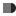 |
|
Выбирает конец линии: округлый, прямоугольный или острый. |
|
Тень |
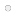 |
0-100 |
Устанавливает размер тени. |
|
Обводка |
 |
0-100 |
Устанавливает ширину обводки. |
|
Сглаживание |
|
0.1-5 |
Устанавливает сглаживание линии (не работает при использования каранаша). |
|
Замедление |
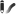 |
1-100 |
Устанавливает замедление линии (работает только при использования каранаша). |
| Изображение |
Выбрать |
|
(нет) |
Выбирает файл изображения на компьютере. |
|
Ширина |
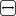 |
0-1000 |
Выбирает ширину изображения. |
|
Длина |
|
0-1000 |
Выбирает длину изображения. |
|
Отступ слева |
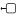 |
0-1000 |
Выбирает отступ изображения от левой стороны рисунка. |
|
Отступ сверху |
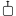 |
0-1000 |
Выбирает отступ изображения от верхней стороны рисунка. |
| Фигура |
Отступ слева |
|
0-1000 |
Выбирает отступ фигуры от левой стороны рисунка. |
|
Отступ сверху |
|
0-1000 |
Выбирает отступ фигуры от верхней стороны рисунка. |
|
Ширина |
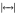 |
0-1000 |
Выбирает ширину фигуры. |
|
Длина |
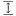 |
0-1000 |
Выбирает длину фигуры. |